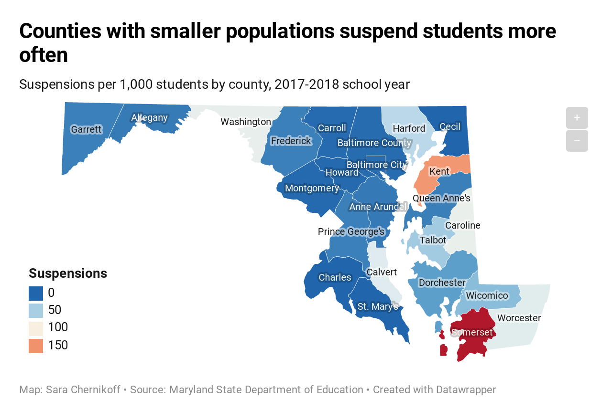

George Washington Carver called education “the key to unlock the golden door of freedom.” The data backs that up: People with bachelor’s degrees or higher make nearly twice as much money as people whose educational journeys end after high school.
But not every student has the same educational experience. Schools can be significantly different just a few miles apart, and that can be the difference between students achieving happy and successful lives or becoming part of the “school-to-prison pipeline.”
We explored the differences in Maryland's two most populous counties – Prince George's, which has the most underfunded school system in the state according to data from Advocates for Children and Youth, and Montgomery, which is better funded but still faces its share of issues – to answer some big questions.
How do Maryland’s educational approaches, especially disciplinary policies, differ by county? And how can those disparities—examined through the lenses of race, income and wealth—affect Maryland students not just when they’re in high school, but for the rest of their lives?
Disciplinary policy plays an extremely important role in a student’s public school experience. The wording of these policies can determine the harshness and extent of a punishment. Depending on the school district a student lives in, they may be subject to very different disciplinary action. Some students may be more vulnerable to discipline depending on how vague policies are interpreted by administrators.
Current Maryland law gives broad powers regarding disciplinary practices to the Maryland State Board of Education as well as to local school districts. The law permits principals to suspend students “for cause, for not more than 10 school days.” It prohibits some disciplinary practices, including suspension or expulsion for attendance-related offenses, and corporal punishment. Overall, Maryland public school’s broad discretion over disciplinary action causes administrators to be heavily reliant on in-school suspensions as a main form of punishment.
Maryland public school discipline and arrest data shows that administrators rely too often on “zero tolerance” exclusionary discipline, such as suspensions.
The Maryland Commission on the School-to-Prison Pipeline and Restorative Practices spent 18 months researching disciplinary policy and effective solutions to prevent discriminatory practices on students, finding that exclusionary discipline has a discriminatory impact on students of color and students with disabilities.
According to the Department of Education's Office of Civil Rights, black students from kindergarten through 12th grade were 3.8 times as likely nationwide to receive out-of-school suspensions as white students. Students with disabilities were also twice as likely to be suspended as other students. Additionally, a report from the Maryland State Department of Education found that 8.1% of African American students and 10.1% of students with disabilities received an out-of-school suspension or expulsion, compared to 2.3% of white students and 3.6% of students without disabilities.
Such practices widen the achievement gap (educational performance disparities between students, most notably defined by differences in socioeconomic status, race/ethnicity and gender). Prince George’s County has some of the highest suspension totals in the state, and posted a 78.5% adjusted four-year graduation rate for the 2017-18 class – the second lowest rate in the state, and down more than four percentage points from the previous year.
“Zero tolerance” discipline policies don't just lead to disparities of educational success between minority students and their white counterparts, though. According to the Maryland Commission on the School-to-Prison Pipeline and Restorative Practices, biased disciplinary decisions by teachers and administrators, increased police presence in schools, the criminalization of trivial infractions and other factors contribute to young people being incarcerated right out of school- the “school-to-prison pipeline.”
Restorative discipline has become a popular tactic used to replace harsh zero tolerance discipline of students. The commission defines restorative disciplinary approaches as “combining a relationship-focused mindset and distinctive tools that create a school climate and culture that is inherently just, racially equitable, and conducive to learning for all students.”
Restorative approaches that schools could use as alternatives to suspension may look like implementing productive responses to conflict that focus on creating connections between members of the school community or promoting trauma-responsive and physically and emotionally safe school environments for students, staff and families.
In order for restorative disciplinary practices to work, local school districts must provide implicit bias training, restorative approach training and cultural competence education to all individuals who work with children. According to the commission, more funding and ongoing research of student outcomes and evaluation of restorative approaches is necessary for restorative discipline philosophy to be effective.
Montgomery County recently received a $1.2 million grant from the National Institute of Justice to incorporate restorative practices throughout the district and measure the results of their program.
The county plans to roll out its restorative justice program in all schools, hiring a Director of Restorative Justice and two instructional specialists to develop training and implementation plans for schools. Although the program is promising, the county worries that these positions will disappear when the grant funding expires.
Prince George’s County Public Schools began using restorative practices in 2017. The Department of Special Education was awarded a grant to create a program that offers research- based intervention to reduce the disproportionality of suspensions among the special education population at 32 schools with high suspension rates. Prince George’s county currently has six schools participating in whole-school restorative practices.
As of December 2018, schools were in the early stages of implementation, but so far the available data looks promising. Suspension rates have dropped in schools using restorative practices, and teachers have reported a positive change in their classroom environments due to community-building circles. The data is limited, though, and must be expanded in order to see the full effect of the program.